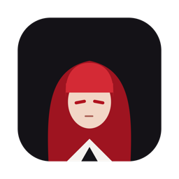
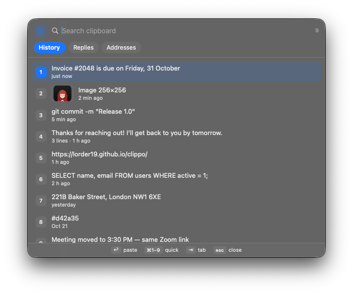

A small, private clipboard manager for Mac. History, saved snippets and a paste queue — free, open source, offline.
macOS 14+ · Apple Silicon & Intel · ~2 MB · no account

Text and images you copied, searchable. ⌘1–⌘9 pastes instantly.
Your own lists of phrases, addresses and replies. Press a digit to paste a line.
Copy several things in a row, then ⌘V pastes them in order. ⇧⌘C queues a column line by line.
Floating panels never steal focus. Every shortcut can be changed.
Secrets from 1Password, Bitwarden, Apple Passwords and other managers are never saved.
Choose apps whose copies are never recorded — banks, work tools, anything.
History and images are stored with AES-GCM, not plain text. Clear on quit if you like.
No analytics, no account. Your clipboard never leaves your Mac — the only request is an optional update check, off by default.
| Clippo | macOS Spotlight history | Paid managers | |
|---|---|---|---|
| Paste by number, one keystroke | ✓ | — | ✓ |
| Paste Queue (copy many, paste in order) | ✓ | — | some |
| Saved snippet lists | ✓ | — | ✓ |
| Encrypted on disk | ✓ | — | rarely |
| Hidden from screen sharing | ✓ | — | rarely |
| Open source, works offline | ✓ | — | — |
| Price | Free | Free | $15–30/yr |
Clippo isn't signed with a paid Apple certificate yet. Open System Settings → Privacy & Security and click "Open Anyway" once. The code is open, so you can check or build it yourself.
Only to press ⌘V for you after you pick an item. Clippo doesn't read what you type and never sends your clipboard anywhere.
While a password field is focused, macOS turns on "Secure Input" and blocks all global shortcuts — this affects every app. Some password managers keep it on by mistake; switching apps or restarting the password manager fixes it.
On MacBooks with a notch, extra menu bar icons can hide behind it. Shortcuts still work; launch Clippo again from Spotlight to open Settings.
Everything is in ~/Library/Application Support/Clippo, encrypted. To uninstall, quit Clippo, delete the app and that folder.